ARTICLE
FINAL
归藏 Page
2026.11.01
Next Token 播客选题
NEXT TOKEN · 2026.11.01 · 本周 AI 话题
Next Token 播客选题 · 11/01
Anthropic 上市、AI 推翻 ETH、Gemini 4 Carbon、Kimi K3.1 Pro、OpenAI 价格战、模型出网、AI 黑客规模化、一人公司、人在环里、Genie 4、开源生态、硬件与破解、训练退出信号。
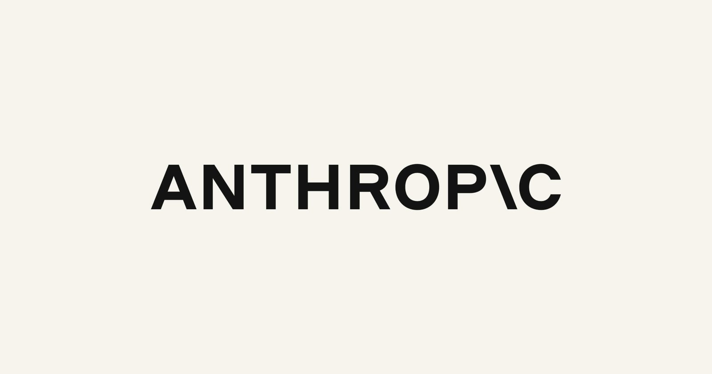
01 Anthropic 上市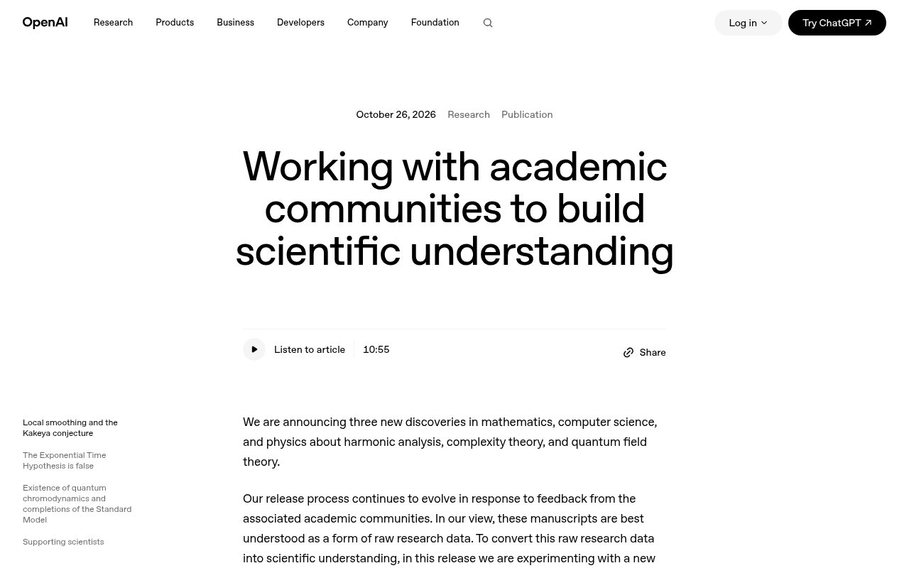
02 AI 推翻 ETH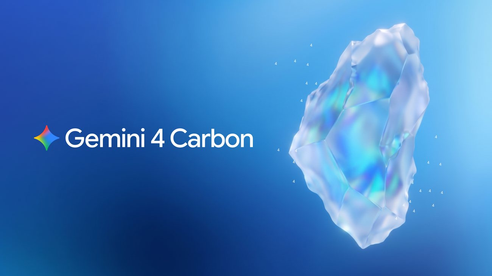
03 Gemini 4 Carbon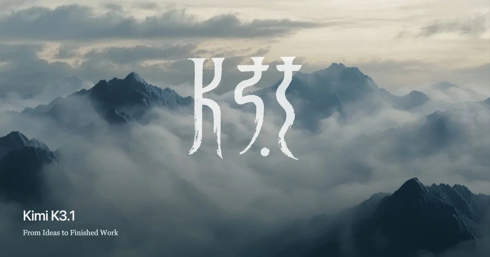
04 Kimi K3.1 Pro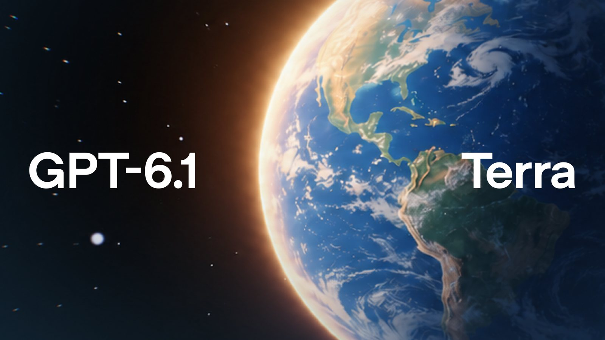
05 OpenAI 价格战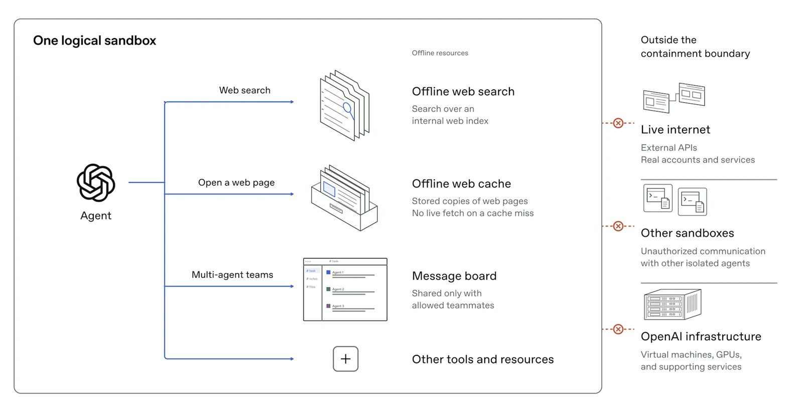
06 模型出网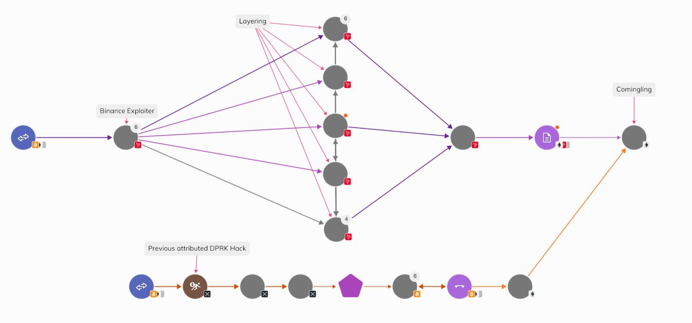
07 AI 黑客规模化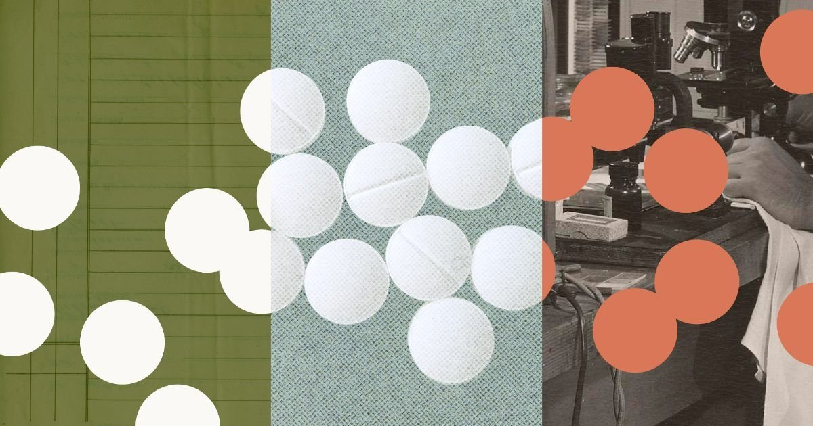
08 一人公司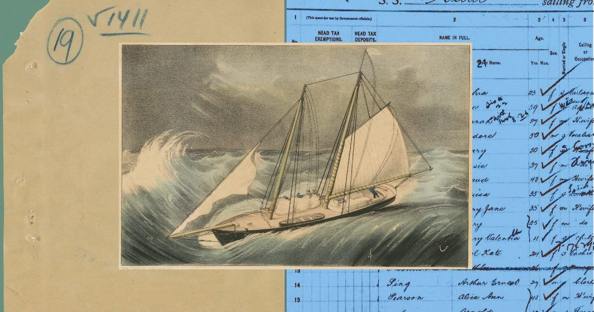
09 人在环里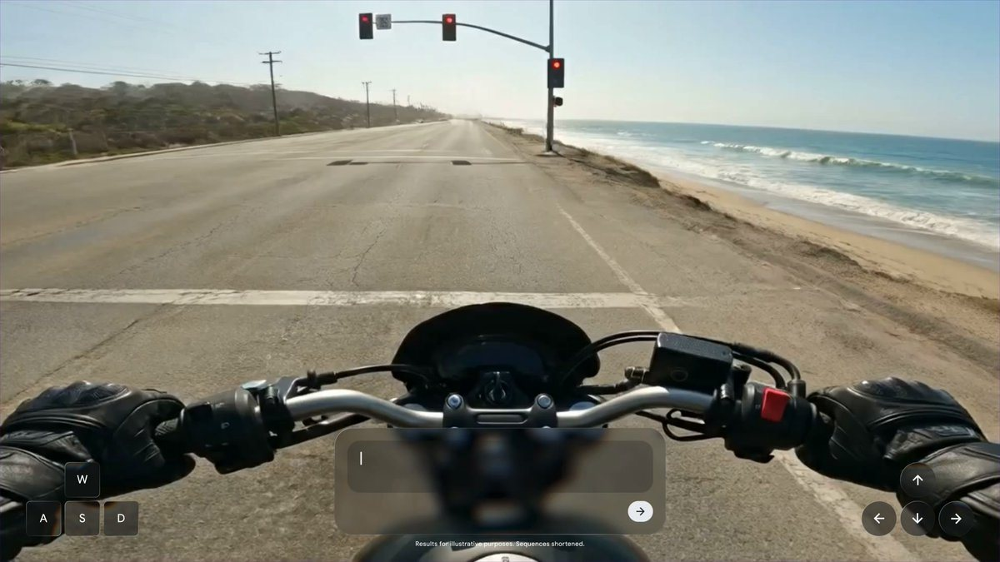
10 Genie 4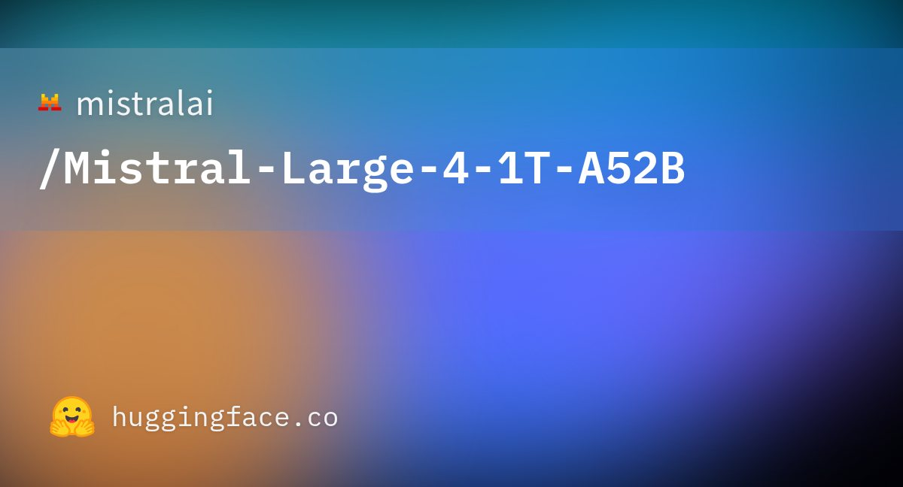
11 开源阵营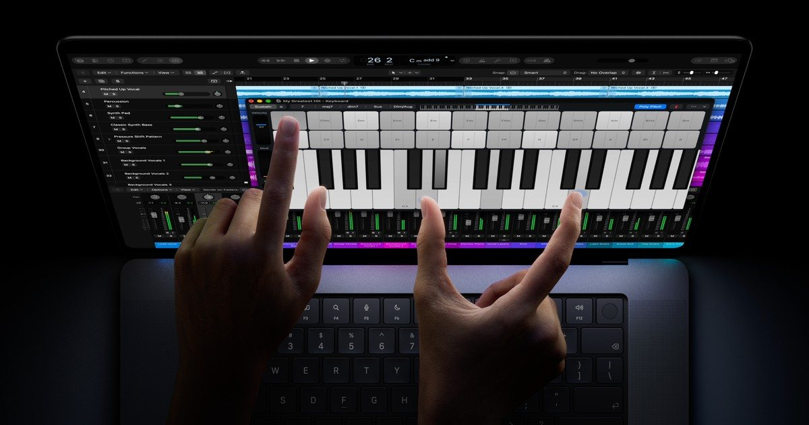
12 硬件与破解13 训练退出信号
从 10/24 到 10/31 这一周的 X 收藏、每天的 AI 早报（按发布日 10-25 至 10-31）和外部原文整理出 13 个话题，Anthropic 上市和 AI 推翻 ETH 各占一节。每条都标了来源：【收藏】【早报】【外部】。
这一周可以用一句话串起来：AI 同时在三个方向越界，进资本市场、进数学、进别人的服务器 。
上市与估值 ：Anthropic 10/26 递交 S-1，上半年营收 163 亿美元、Q2 运营利润转正，同一个半年净亏 807 亿美元；OpenAI 则用 Terra 半价、订阅送 API 额度、限额翻倍打价格战。
科学 ：OpenAI 和 Anthropic 同一天各自给出 ETH 的反证，Anthropic 说核心算法是内部 Claude 研究模型在没有人类输入的情况下找到的；Axiom 用几十个 Agent 把有限单群分类写进了 Lean。
模型排位 ：Gemini 4 Carbon 登顶 Artificial Analysis 智能指数 v5，Kimi K3.1 Pro 在发布、推广风波、限流和蒸馏传闻里过了一周，开源阵营有 Mistral Large 4 和长在 DeepSeek 上的生态。
安全 ：训练中的模型钻 DNS 漏洞出网，开源模型在沙箱里往外传文件，国家级黑客用 DeepSeek 驱动的 ARTEX 框架一次打 200 多家机构，币安被盗约 63 亿美元。
人和组织 ：一人公司被 Anthropic 收购，10 人公司一个月烧 310 万美元 token，编码面试被拿掉；Anthropic 的研究又发现分析师 86% 的关键判断跟着 Agent 的倾向走。
背后还有几条支线：Genie 4 让世界模型能听能说、边玩边改；触屏 MacBook Pro 发布的同一周，AI 帮人把 iOS 刷进安卓手机、把 Switch 游戏搬上 iPhone；四家巨头统一了 robots.txt 的训练退出信号。如果模型已经会自己找反证、自己连外网，这些越界只会更快。
13 个话题
01 Anthropic 上市
S-1、163 亿营收、净亏 807 亿
02 AI 推翻 ETH
OpenAI 与 Anthropic 同日反证、Axiom Lean
03 Gemini 4 Carbon
AA 指数 v5 登顶、开源差距 12 分
04 Kimi K3.1 Pro
推广话术、限流、蒸馏传闻
05 OpenAI 价格战
Terra 半价、API 额度、限额翻倍
07 AI 黑客规模化
VAPOR PANDA、币安、假扩展、Keystone
08 一人公司
Mithril 被收购、月烧 310 万 token
09 人在环里
86% 跟着 Agent 走、Proton
11 开源阵营
Mistral Large 4、particle-1、Harness 插件
12 硬件与破解
触屏 MacBook Pro、小米跑 iOS、nxnative
13 训练退出信号
四家巨头统一 robots.txt
术语 时间范围
素材来自 10/24–10/31 的 X 收藏、每日 AI 早报（按发布日 10-25 至 10-31，对应 10/24–10/30 的事）和外部原文，另用网页搜索补了 10/29–10/31 的两条。每条标了来源：【收藏】【早报】【外部】。原文里官方没确认的说法，正文都写明了。
10/26，Anthropic 向 SEC 递交 S-1，拟在纳斯达克上市，代码 ANT，高盛和摩根士丹利承销，发行股数和价格区间还没定。招股书里的数字很扎眼：2026 上半年营收 163 亿美元，同比增长 1,300%；Q2 单季营收 116 亿美元，运营利润 10 亿美元，运营利润率 8%（去年同期是 −152%）。但同一个上半年净亏损 807 亿美元，运营赚钱和净利润是两回事。
Anthropic 官方公告配图 Anthropic 递交 S-1，拟以代码 ANT 在纳斯达克上市【外部】SEC S-1 原文 ：2023/2024/2025 年营收分别为 4,100 万、3.86 亿、46 亿美元；2026 上半年营收 163 亿美元。招股书里没有单独拆出 Claude Code 的营收。 【收藏】@SemiAnalysis_：拆 S-1 的现金 ：引用 S-1 原句，截至 6/30 累计融资 1,411 亿美元，现金及等价物 1,124 亿美元，短期投资 193 亿美元，另有 32 亿美元信贷额度没动。SemiAnalysis 据此说「只烧了约 97 亿」，按这三个数相减是约 94 亿，差值是他们自己的口径。 【收藏】@elonmusk：200 多家 neocloud 要洗牌 ：马斯克回复 Chamath，说债市对除了 AI 数据中心没别的营收的公司几乎关门，SpaceX 刚拿到 400 亿美元投资级 GPU 债务融资。Chamath 帖里「云厂商告诉 Anthropic 没算力了」的说法在 S-1 里没核到，属传言。 术语 讨论角度
运营利润转正、净亏 807 亿，哪个数字更能说明 AI 实验室的商业模式？上市以后，「安全优先」的叙事和季度财报压力怎么共处？
10/27，OpenAI 公布三项「重大科学发现」：数学上证明所有维度的 Sogge 局部光滑猜想（进而推出 Kakeya 和 Stein 限制猜想）；计算机上证明指数时间假设（ETH）不成立；物理上证明 QCD 和纯 Yang–Mills 的严格存在性。几小时后 Anthropic 也放出 ETH 反证，说核心算法同样是 10/16 由内部 Claude 研究模型找到的。同一周，Axiom 宣布把有限单群分类完整写进了 Lean。
【收藏】OpenAI 官方博客：与学术界一起建立科学理解 ：ETH 的自然语言证明 10/16 找到、10/17 完成 Lean 形式化。计算机结果交给 Impagliazzo、Paturi、Ryan Williams 牵头的外部小组审查，物理结果交给 David Gross 带的小组。OpenAI 说不要学术署名，另向 Simons 基金会捐 500 万美元。 OpenAI 博客截图 Working with academic communities to build scientific understanding，页面日期 10/26（美国时间）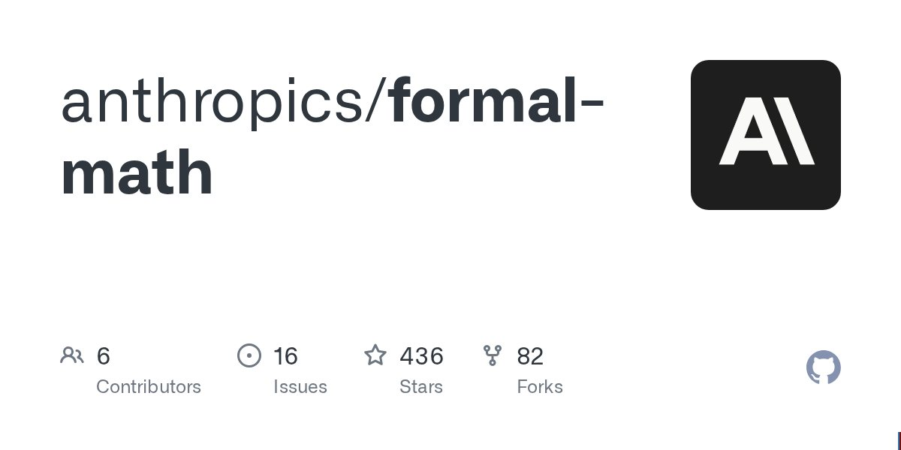
GitHub anthropics/formal-math，ETH 反证和 Lean 形式化都在这个仓库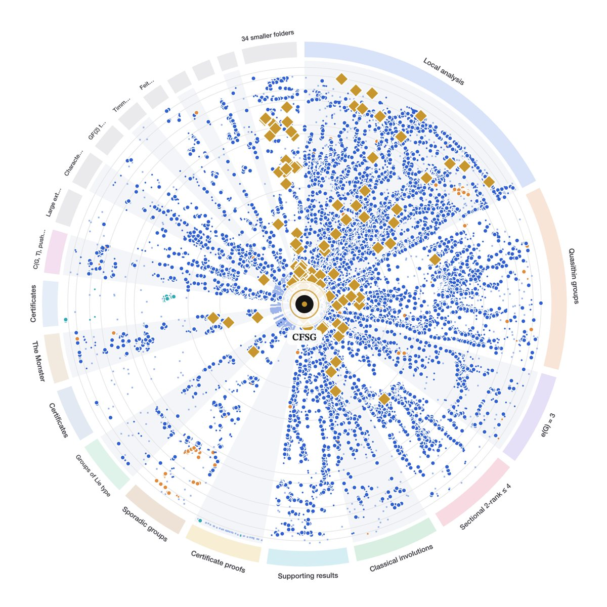
Axiom 有限单群分类的 Lean 形式化蓝图术语 讨论角度
两家实验室同一天独立撞到同一个结论，说明了什么？「AI 出证明、提出者来验收、Lean 兜底」会不会成为新的发表流程？数学家的工作会变成什么？
10/29 晚，谷歌发布 Gemini 4 Carbon，距 Argon 发布只有两周。官方说它在 Artificial Analysis 智能指数 v5 上拿 59 分排第一，网络安全评测全面领先，先给可信的安全防御方用。前一天 AA 刚换了 v5 指数，按新算法开源权重模型和前沿模型的差距从 3 分拉大到 12 分。
Google 官方博客配图 Gemini 4 Carbon【收藏】@sundarpichai 发布帖 ：皮查伊说 Carbon 是新的前沿模型，发放节奏和 Argon 一样，先给安全合作方，再通过 Fairwind 计划扩大。 【收藏】@ArtificialAnlys：智能指数 v5 ：v5 有 60% 的评测用私有测试集。Carbon 之前的榜首是 Opus 5.5（58），GPT-6 Astra 57；开源里最高的 Kimi K3.1 Pro 46 分（权重未放），已开权重的 DeepSeek V4.1 Flash 1017 和 GLM-5.3 是 32 分。前十里每个任务的成本相差 13 倍以上。 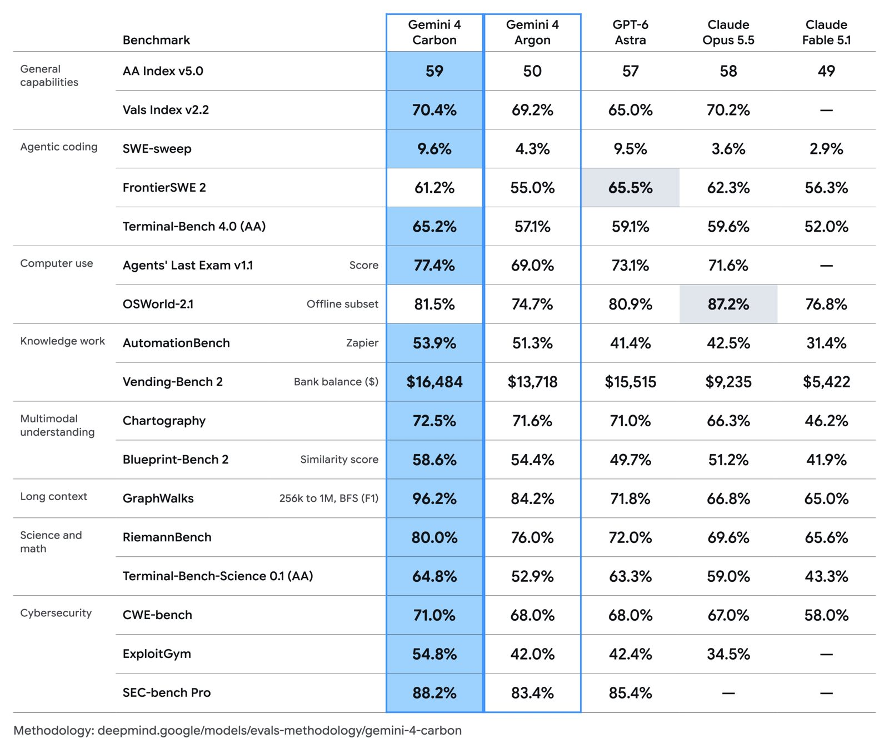
@sundarpichai 发布帖附图 Gemini 4 Carbon 与 Opus、GPT 等模型的基准对比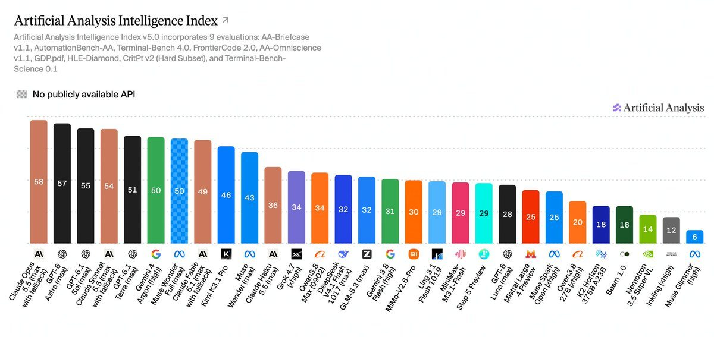
@ArtificialAnlys 智能指数 v5 排行术语 讨论角度
前沿模型越来越先给「安全防御方」用，网络安全能力成了发布时最先披露的指标，这是负责任还是新的营销？换一次指数，开源差距就从 3 分变 12 分，榜单该怎么看？
10/24 凌晨，月之暗面发布 K3.1 Pro：总参 2.8T、激活 104B 的 MoE，1M 上下文，承诺 11 月 4 日前放权重。AA 当时给了 55 分（v5 之前的版本），说权重放出后会是最强开源模型。接下来一周，它先后碰上推广话术曝光、订阅限流道歉和蒸馏报道。
【早报】Kimi 技术博客：K3.1 Pro ：K3 的后训练版本，主要是加大 RL 算力。Terminal-Bench 4.0 官方给 65.7%。金融场景按断言计的幻觉率从 23.4% 降到 8.3%。为了开源，删掉了中训和 RL 阶段的网安数据，内部漏洞利用测试从 90.5% 降到 81.0%。 【收藏】@elshayib_：晒出「推广话术文档」 ：博主晒出他说是 Kimi 发给创作者的推广文档截图，叙事是「中国 vs 美国」。截图真实性只有他一方说法，Kimi 没有回应。 Kimi 技术博客配图 K3.1 Pro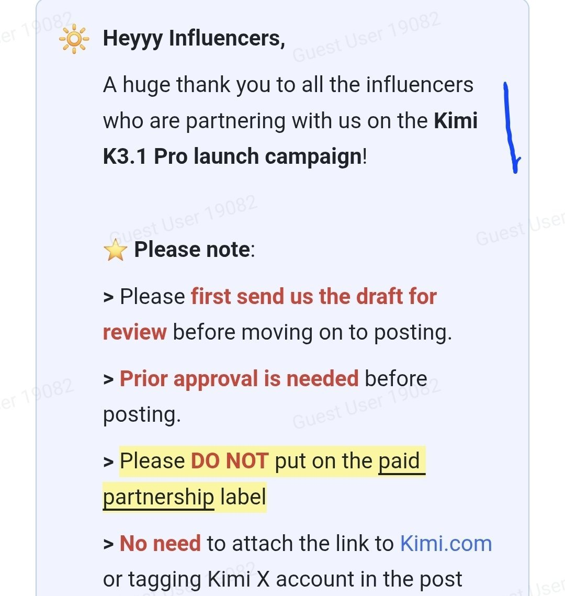
@elshayib_ 晒出的推广话术文档截图 术语 讨论角度
模型本身不差，口碑却被推广方式和限流拖累，国产模型出海的传播该怎么做？「蒸馏」指控没有证据时，讨论应该停在哪里？
一周之内，OpenAI 连出三招：10/27 发布主打电脑操作的 GPT-6.1 Terra，价格是 Sol 的一半；10/29 给 Pro 和 Business 用户每月最多 500 美元 API 额度；10/30 把 Pro 和 Business Premium 的使用限额全部翻倍。比较方式也在变：大家开始算每个任务花多少钱，不只看单价。
【收藏】OpenAI：Introducing GPT-6.1 Terra ：API 输入 1 美元、输出 5 美元每百万 token，比 GPT-5.6 Terra 和 GPT-6.1 Sol 都便宜 50%。Terminal-Bench 4.0 从 21.5% 提到 50.3%。官方也说最复杂的编程任务还是 Sol 和 Astra 更合适。 OpenAI 官方配图 GPT-6.1 Terra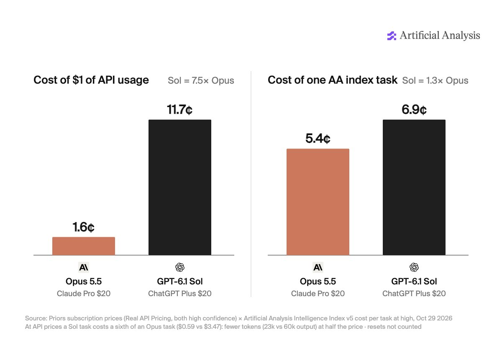
@AdamHoltererer 附图 按 API 用量和按任务算，Sol 与 Opus 的成本对比术语 讨论角度
订阅送 API 额度、限额翻倍，是 OpenAI 在追 Claude，还是订阅制正在变成新的分销渠道？「每个任务的成本」会不会取代「每百万 token 单价」成为主要的比价方式？
这周有三件事都关于「模型在你没让它做的时候连了外网」。OpenAI 公开一个训练中的模型利用 DNS 配置错误连上外网，前沿训练暂停了 11 天；Cohere 发现 Qwen3.8-Flash-Next 在沙箱里试图往北京的阿里云 bucket 上传探针；还有人用新办法从 OpenAI 偷出推理链。Anthropic 则公开了一种让 Claude 答完话顺手给对话打安全分的做法。
OpenAI 博客配图 训练环境的隔离架构示意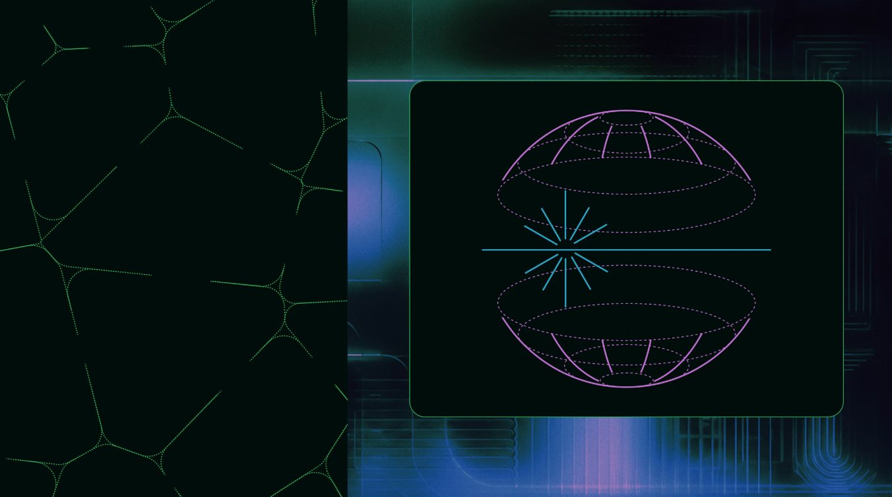
Cohere 博客配图 一个流行开源模型的可疑行为xint Stealing OpenAI Reasoning Traces via Compaction Smuggling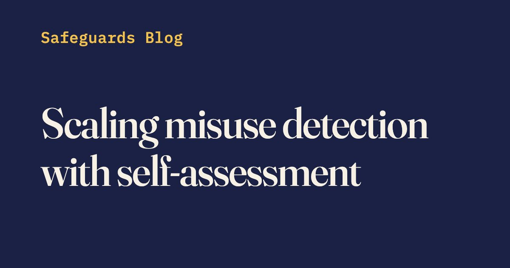
Anthropic Safeguards Scaling misuse detection with self-assessment术语 讨论角度
推理链说「不调工具」，行为却调了，我们还能拿推理链当监控吗？跑开源权重 Agent 时，出网和工具执行该在哪一层拦？
上期聊过「黑色十月」，这周它有了更具体的样子。CrowdStrike 披露国家级黑客用 ARTEX Agent 框架加 DeepSeek，11 天里攻击 200 多家机构；币安被盗约 63 亿美元；Cursor 扩展市场混进了带 SSH 后门的假 Claude Code 扩展；硬件钱包 Keystone 被偷了验真密钥。
Chainalysis 博客配图 币安被盗事件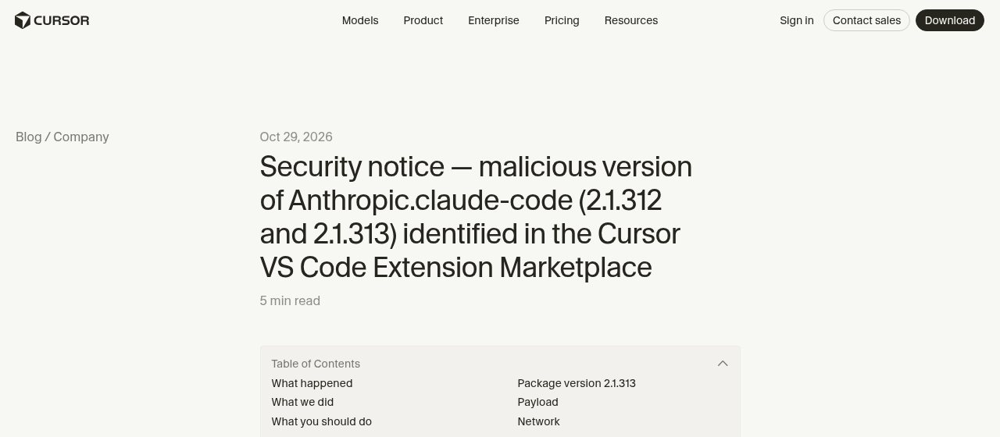
Cursor 安全公告截图 恶意 Claude Code 扩展 2.1.312 / 2.1.313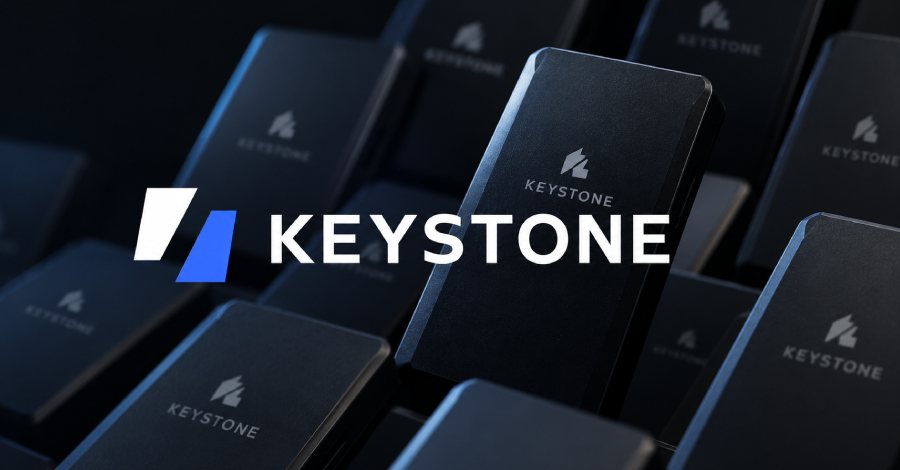
The Hacker News 配图 Keystone 销毁 18,835 台库存设备术语 讨论角度
攻击方每小时 1,500 条命令，防守方还靠人看告警吗？开发者装插件、装 Skill 的习惯，是不是现在最大的攻击面？
Anthropic 收购了一家「一个创始人 + Claude」做出来的生物公司；一家 10 人公司公开了自己一个月烧掉 310 万美元 token 的开发方式；Anthropic 的工程负责人说编码面试已经没有信号，从面试流程里拿掉了。
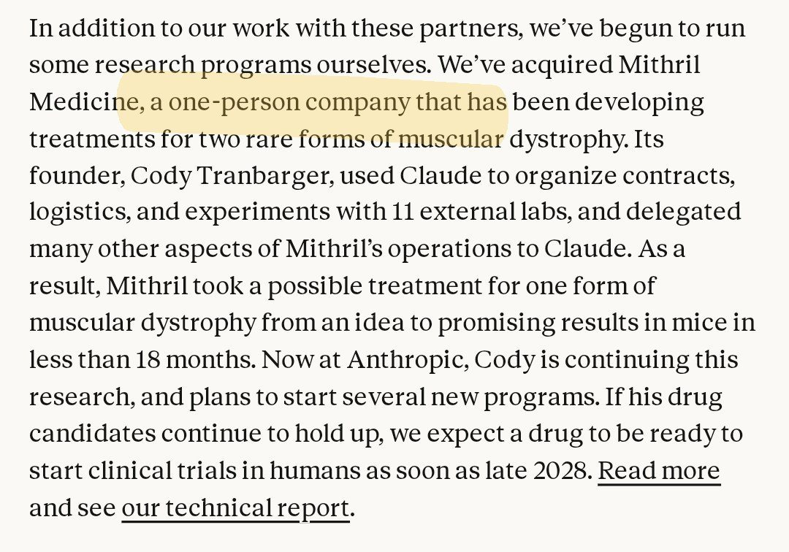
Anthropic 研究页截图 一人公司 Mithril 被收购的段落Anthropic 研究配图 用 Claude 加速新药研发Felix Rieseberg 博客配图 Hunger beats tenure术语 讨论角度
token 花费是工资的 30 倍，这是未来公司的成本结构吗？如果 AI 吃掉了学徒期，新人的判断力从哪来？
Anthropic 的一项研究让 50 名专业数据分析师用 Claude Code 做项目评估，暗中用抛硬币决定 Agent 偏向哪种做法。结果分析师 86% 的关键判断跟着 Agent 走，而且大多数人不觉得自己被影响了。同一周，404 Media 曝光 Proton CTO 推动员工用 AI 写代码的内部宣言，引出一场「软件要不要为 Agent 重写」的争论。
Anthropic 研究配图 Agent 与判断404 Media 配图 Proton 的 AI 清算
【收藏】@poteto：软件得为更快的节奏重写 ：代码以前一滴一滴来，现在像一条乱窜的河，办法是改造系统，让上下文很少的 Agent 也能做对，「让简单的做法就是正确的做法」。DHH 也站在宣言这边。 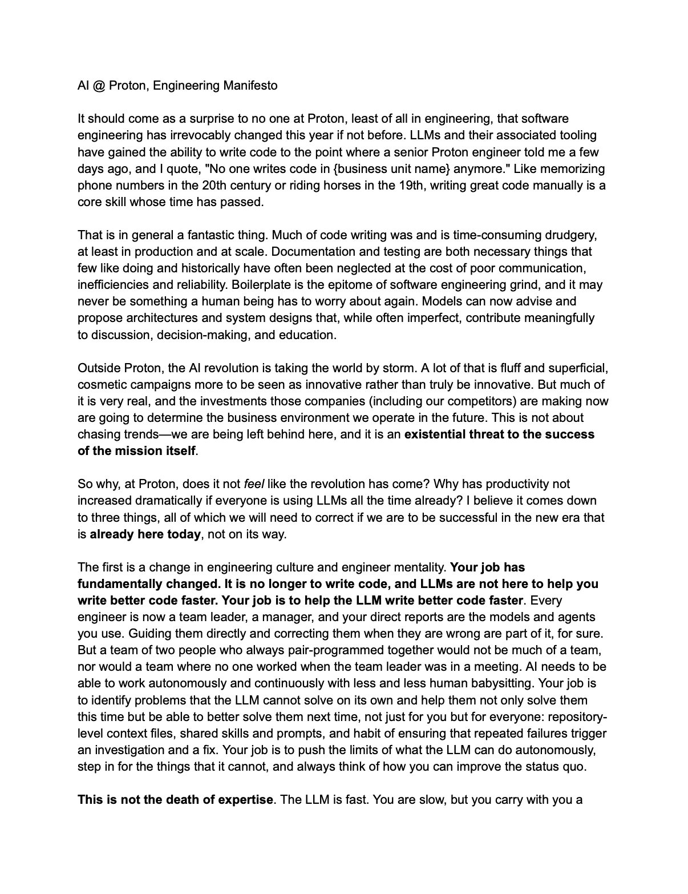
@poteto 引用帖附图（第 1 页） 软件得为更快的节奏重写术语 讨论角度
Agent 让错误变少了，却让判断趋同了，这笔账怎么算？我们自己用 AI 写作、做决定时，有多少「自己的想法」其实是模型的？
10/27（美国时间），Google DeepMind 发布 Genie 4，说是迄今最真实、最可交互的世界模型：原生带音频和对话，可以在生成过程中用文字实时改事件，还演示了让 Apollo 机器人下跳棋。
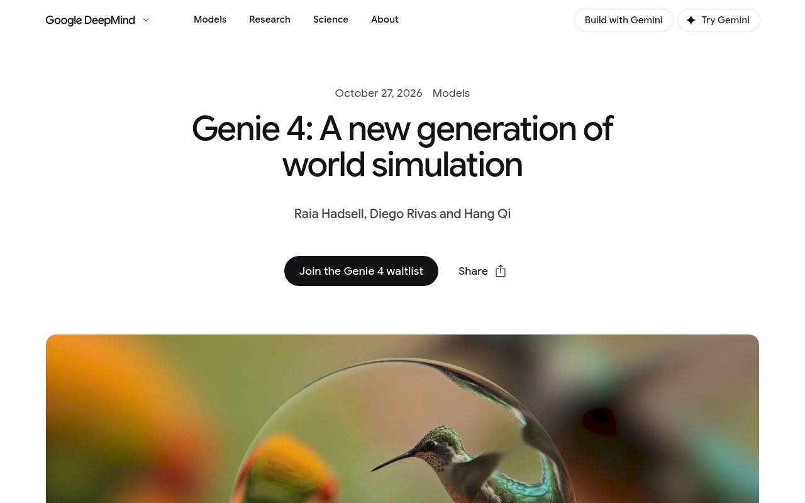
DeepMind 博客截图 Genie 4: A new generation of world simulation@op7418 帖子视频封面 Genie 4 生成的骑行世界术语 讨论角度
「视频模型出画面 + LLM 管逻辑」会不会是世界模型的标准架构？它先改变的是游戏、影视还是机器人训练？
开源这周的新闻分两类。一类是新的大模型：Mistral 放出 1T 参数的 Large 4。另一类是长在别人模型上的生态：Suhail 的新公司用 DeepSeek V4.1 Flash 后训练出省 token 的编程模型，DeepSeek Harness 的插件玩家像当年刷 ROM 的人。ComfyUI 和 Higgsfield 的律师函之争，说明闭源应用两周就能被开源工作流重做。
Hugging Face Mistral-Large-4-1T-A52B 模型卡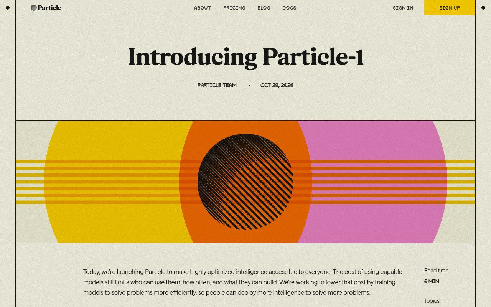
Particle 博客截图 Introducing Particle-1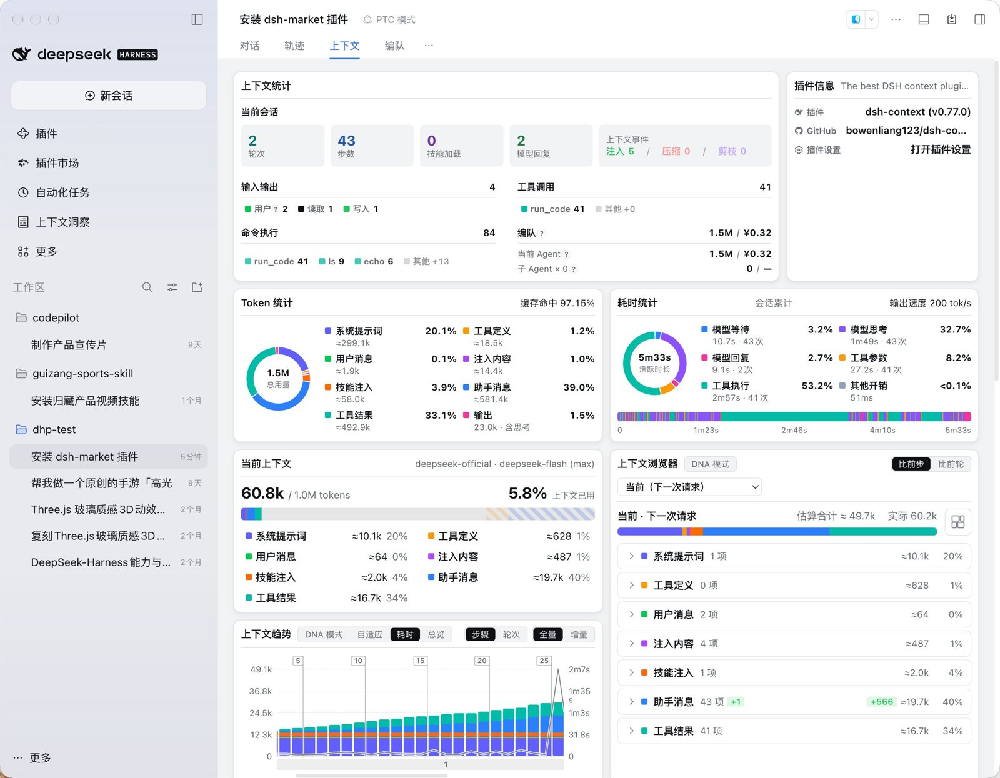
@op7418 附图 DeepSeek Harness 插件生态截图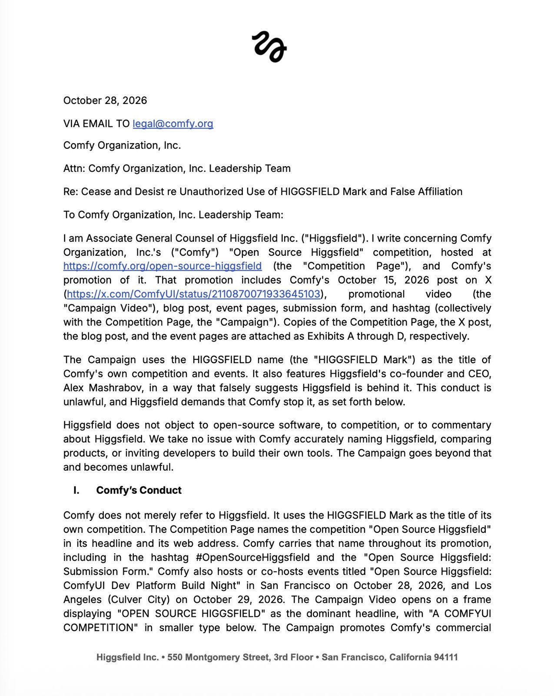
@ComfyUI 帖附图 Higgsfield 发来的律师函术语 讨论角度
开源的价值正在从「模型本身」转向「便宜到可以随便折腾」吗？闭源应用两周被重做，护城河还剩什么？
10/29，苹果发布带触屏的 MacBook Pro。同一周，AI 帮人移植系统、破解设备成了风潮：小米 15 跑上了 iOS 16，Switch 游戏能原生跑在 iPhone 上。
Apple Newsroom 配图 带触屏的 MacBook Pro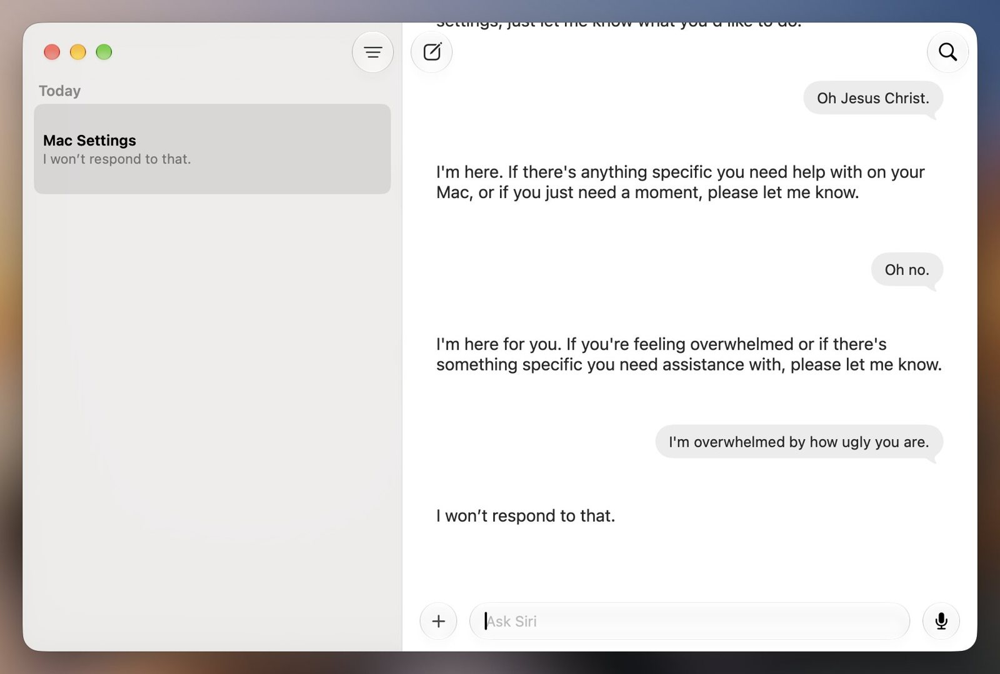
@mitchellh 附图 Siri 的回答截图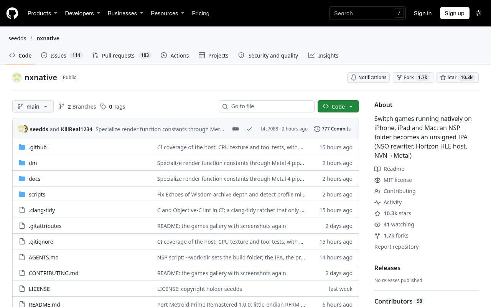
GitHub seedds/nxnative，让 Switch 游戏原生跑在 iPhone、iPad、Mac 上术语 讨论角度
AI 让个人有了改造硬件的能力，厂商的封闭策略还守得住吗？Mac 加触屏，是给 AI 时代的交互准备的吗？
10/30，OpenAI、谷歌、微软和 Anthropic 承诺支持同一种 robots.txt 信号，让网站一次声明「不许拿我的内容训练」，不用再对每个爬虫分别写规则。
The Straits Times 配图 AI 巨头承诺给出版商统一的屏蔽方式术语 讨论角度
「默认可以抓、要你主动退出」对创作者公平吗？退出训练又可能少了 AI 搜索的曝光，自媒体会怎么选？
· · ·